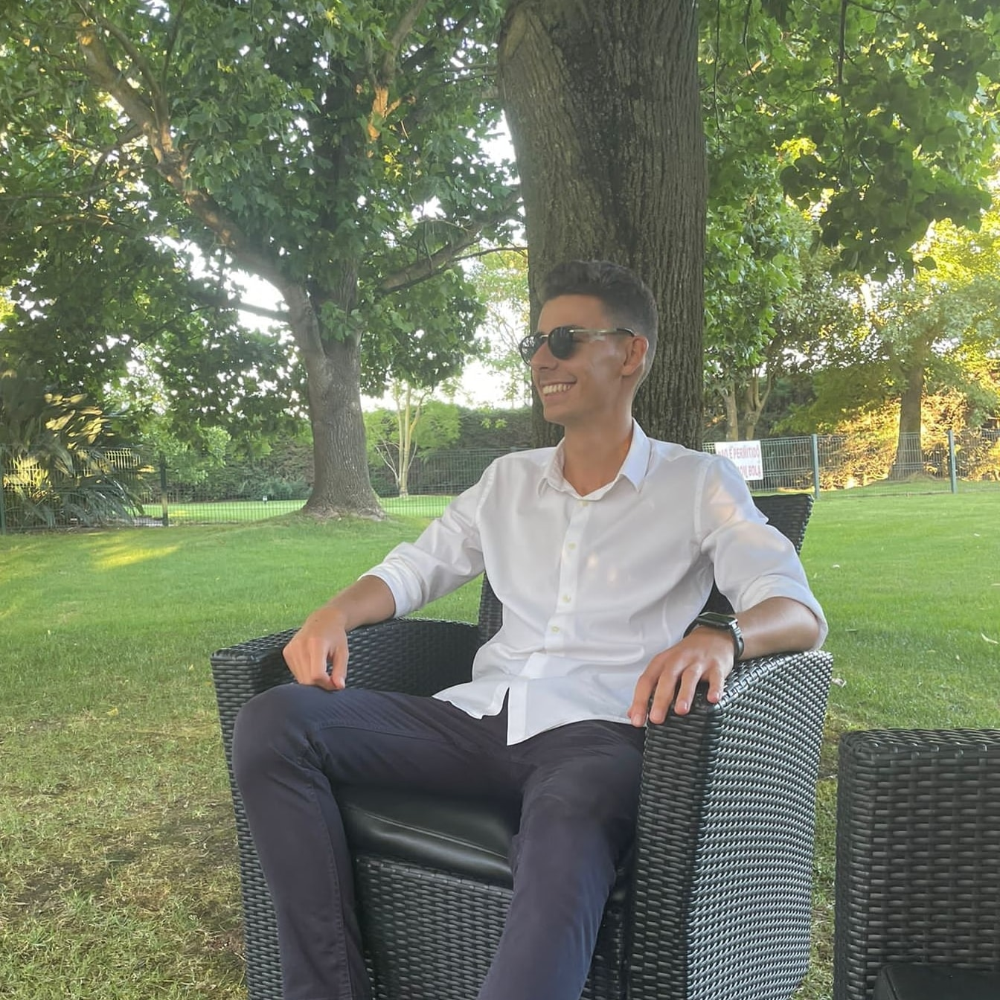
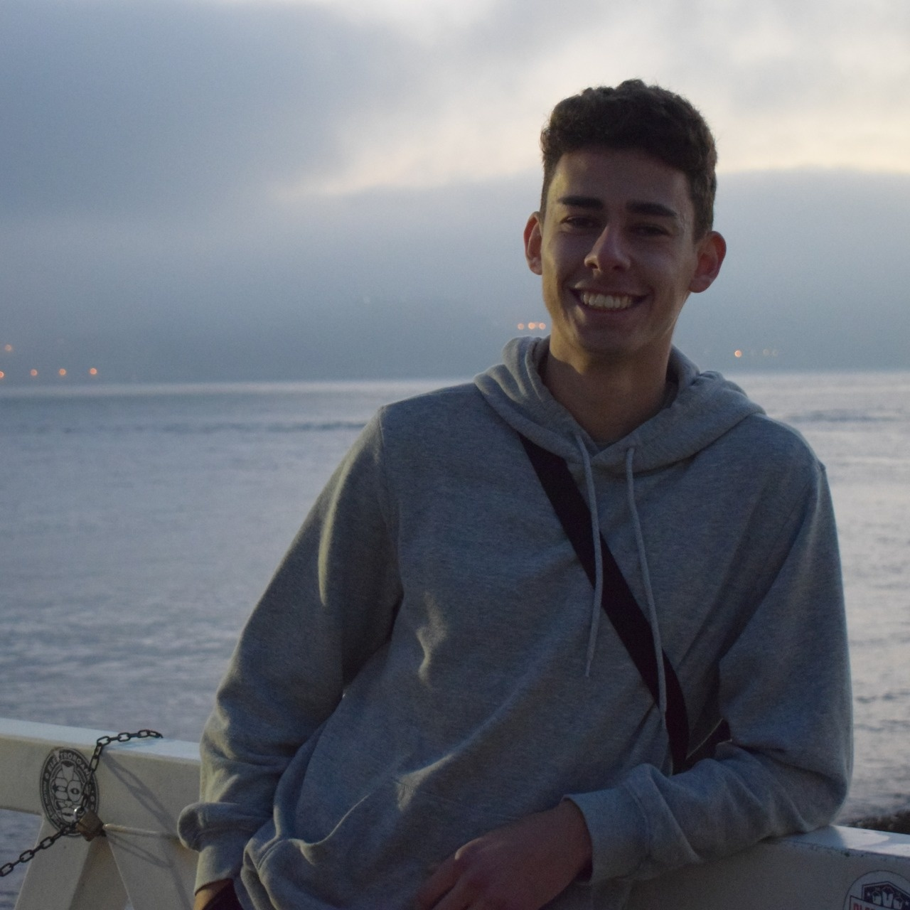
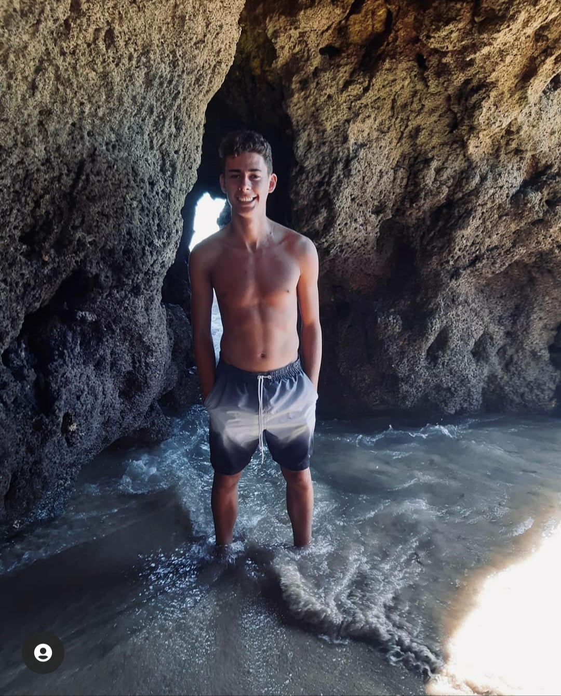

Olá! Eu sou o Diogo Miguel Viegas Baptista, tenho 21 anos e moro em Corroios.
Neste momento, estou a frequentar o 1º ano do Mestrado em Ensino da Educação Física nos Ensinos Básico e Secundário, na Faculdade de Motricidade Humana, sou treinador de futebol no Leão Altivo (Benjamins B) e leciono Atividades de Enriquecimento Curricular em Atividade Física e Desportiva, na Escola Básica de Santa Marta do Pinhal, a crianças do 1º, 2º, 3º e 4º ano de escolaridade.
Em baixo, podem encontrar algumas fotos da minha pessoa.


